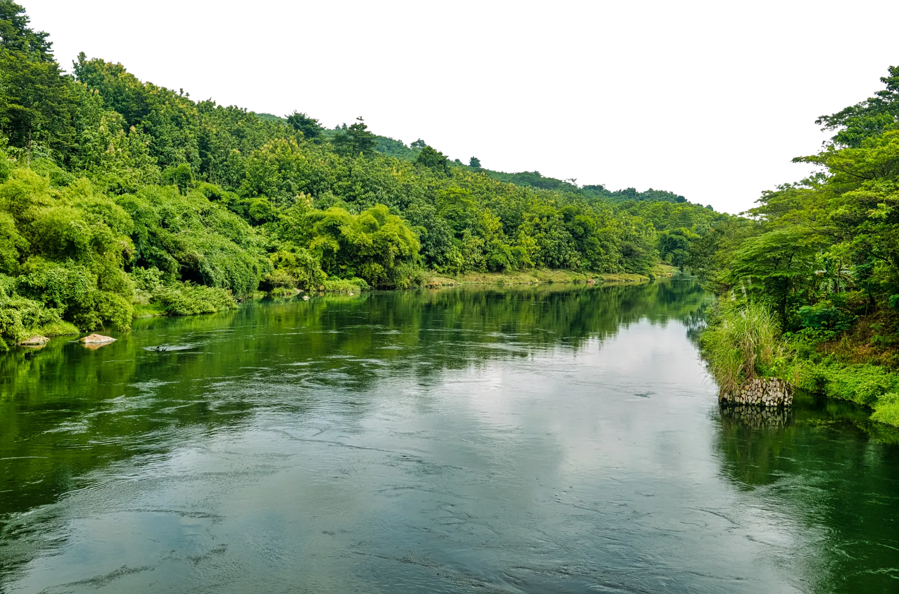
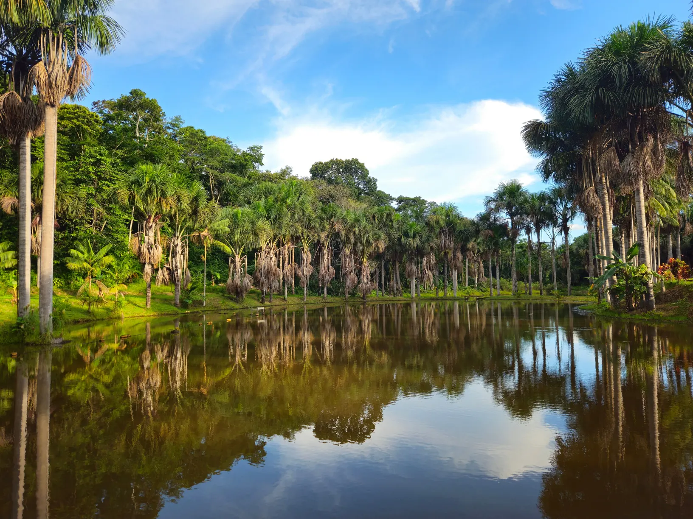
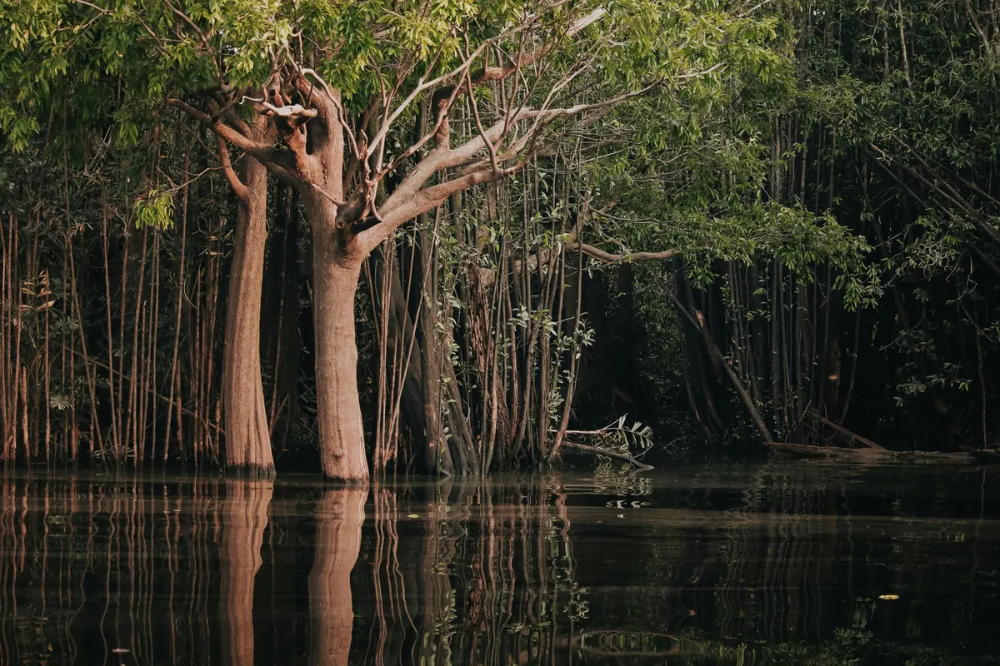
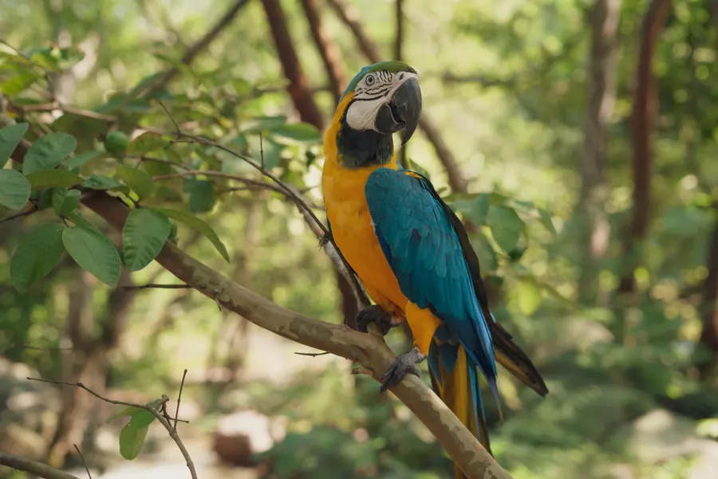

<title>Pesquisa na Amazônia</title>
<meta name="claude:viewport-fit-sides" content="cover">
<link rel="preconnect" href="https://fonts.googleapis.com">
<link rel="stylesheet" href="https://fonts.googleapis.com/css2?family=Hanken+Grotesk:wght@300;400;500;600;700&family=IBM+Plex+Mono:wght@400;500&display=swap">
<style>
/* Layout: página única em faixas verdes como o modelo de referência; o painel e o chat são vidro fosco sobre fotos da floresta. */
:root{
  --mata:#123A14; --mata-2:#1F5A1E; --broto:#4C9A30; --oliva:#8FAE2A;
  --lima:#E6F76B; --lima-suave:#E6F76B33;
  --papel:#F3F6EC; --papel-2:#C9D6BE; --papel-3:#9DB08F;
  --vidro:rgba(240,255,230,.08); --vidro-2:rgba(9,32,11,.5); --borda:rgba(230,247,107,.28); --borda-2:rgba(243,246,236,.18);
  --alerta:#FFB35C; --queda:#9BE36B;
  --display:"Hanken Grotesk","Helvetica Neue",Arial,sans-serif;
  --texto:"Hanken Grotesk","Helvetica Neue",Arial,sans-serif;
  --dados:"IBM Plex Mono",ui-monospace,Menlo,monospace;
  color-scheme:dark;
}
*{box-sizing:border-box}
html{scroll-behavior:smooth}
@media (prefers-reduced-motion:reduce){html{scroll-behavior:auto}*{animation:none!important;transition:none!important}}
body{background:var(--mata) linear-gradient(160deg,var(--mata) 0%,#1A4C1A 30%,var(--mata-2) 55%,#2A6420 80%,#3B7A26 100%);color:var(--papel);font-family:var(--texto);font-size:17px;line-height:1.55;margin:0}
a{color:var(--lima)}
:focus-visible{outline:2px solid var(--lima);outline-offset:3px;border-radius:6px}
.wrap{max-width:1200px;margin:0 auto;padding-left:max(20px,env(safe-area-inset-left,0px));padding-right:max(20px,env(safe-area-inset-right,0px))}
.dots{display:inline-flex;gap:9px}.dots i{width:11px;height:11px;border-radius:50%;background:var(--lima);display:block}
.pill{display:inline-flex;align-items:center;gap:10px;border:1px solid var(--borda);border-radius:999px;padding:10px 22px;color:var(--lima);font-size:18px;background:rgba(18,58,20,.55)}
.eyebrow{font-family:var(--dados);font-size:12px;letter-spacing:.14em;text-transform:uppercase;color:var(--lima)}
.titulo{font-family:var(--display);font-weight:400;letter-spacing:-.045em;line-height:.9;margin:0;background:linear-gradient(90deg,#FFFFFF 0%,#E4EBDD 45%,#A9C29A 100%);-webkit-background-clip:text;background-clip:text;color:transparent;text-wrap:balance}
.vidro{background:var(--vidro);border:1px solid var(--borda-2);border-radius:28px;backdrop-filter:blur(18px) saturate(140%);-webkit-backdrop-filter:blur(18px) saturate(140%);box-shadow:0 30px 80px rgba(5,20,6,.35),inset 0 1px 0 rgba(255,255,255,.12)}
.linha{position:absolute;border-color:rgba(243,246,236,.35);border-style:solid;pointer-events:none}
.no{position:absolute;width:20px;height:20px;border-radius:50%;background:var(--lima);box-shadow:0 0 0 6px var(--lima-suave)}

/* topo */
header.topo{position:sticky;top:env(safe-area-inset-top,0px);z-index:20;background:rgba(18,58,20,.72);backdrop-filter:blur(14px);-webkit-backdrop-filter:blur(14px);border-bottom:1px solid var(--borda-2)}
body::before{content:"";position:fixed;inset:0 0 auto;height:env(safe-area-inset-top,0px);z-index:21;background:var(--mata)}
.topo .wrap{display:flex;align-items:center;justify-content:space-between;gap:16px;padding-block:12px}
.marcas{display:flex;align-items:center;gap:14px}.marcas img{height:34px;width:auto}.marcas .sep{width:1px;height:28px;background:var(--borda-2)}
.topo nav{display:flex;gap:20px;font-size:15px}.topo nav a{color:var(--papel-2);text-decoration:none}.topo nav a:hover{color:var(--lima)}
@media (max-width:760px){.topo nav{display:none}}

/* abertura */
.hero{position:relative;overflow:hidden;padding-block:56px 0}
.hero .wrap{position:relative;z-index:2}
.hero .meta{display:flex;justify-content:space-between;align-items:center;margin-bottom:26px}
.hero .titulo{font-size:clamp(64px,13vw,190px)}
.hero .titulo span{display:block;padding-left:clamp(0px,9vw,160px)}
.hero-linha{display:flex;flex-wrap:wrap;gap:16px 28px;align-items:center;margin-top:30px}
.hero-linha p{max-width:520px;margin:0;color:var(--papel-2);font-size:18px}
.contato{display:flex;flex-wrap:wrap;gap:12px 26px;align-items:center;background:rgba(18,58,20,.85);border-radius:20px;padding:18px 26px;margin-top:30px;width:fit-content;max-width:100%}
.contato b{color:var(--lima);letter-spacing:.04em}
.hero-mata{position:relative;z-index:1;margin-top:-60px;width:100%;height:clamp(220px,34vw,460px);object-fit:cover;object-position:bottom;display:block;pointer-events:none}
.btn{display:inline-flex;align-items:center;gap:10px;border:0;cursor:pointer;font:600 16px var(--texto);border-radius:999px;padding:14px 24px;background:var(--lima);color:var(--mata);text-decoration:none}
.btn.fantasma{background:transparent;color:var(--lima);border:1px solid var(--borda)}

/* faixas */
section.faixa{position:relative;padding-block:84px}
.cab{display:grid;grid-template-columns:1.25fr 1fr;gap:24px 48px;align-items:end;margin-bottom:40px}
.cab .titulo{font-size:clamp(46px,7.4vw,104px)}
.cab p{margin:0;color:var(--papel-2);max-width:460px}
@media (max-width:860px){.cab{grid-template-columns:1fr}}

/* painel */
.painel-fundo{position:relative;border-radius:36px;overflow:hidden;padding:clamp(14px,2.4vw,28px)}
.painel-fundo>img{position:absolute;inset:0;width:100%;height:100%;object-fit:cover;filter:saturate(1.05)}
.painel-fundo::after{content:"";position:absolute;inset:0;background:linear-gradient(180deg,rgba(12,40,14,.5),rgba(12,40,14,.78))}
.painel{position:relative;z-index:1;padding:clamp(18px,2.6vw,32px)}
.painel-topo{display:flex;flex-wrap:wrap;justify-content:space-between;gap:12px;align-items:center;margin-bottom:22px}
.painel-topo h3{margin:0;font-size:22px;font-weight:600}
.vivo{font-family:var(--dados);font-size:12px;color:var(--lima);border:1px solid var(--borda);border-radius:999px;padding:6px 12px}
.kpis{display:grid;grid-template-columns:repeat(4,1fr);gap:14px}
@media (max-width:900px){.kpis{grid-template-columns:repeat(2,1fr)}}
@media (max-width:460px){.kpis{grid-template-columns:1fr}}
.kpi{background:var(--vidro-2);border:1px solid var(--borda-2);border-radius:20px;padding:18px 18px 16px;min-width:0}
.kpi .rot{font-family:var(--dados);font-size:11.5px;letter-spacing:.08em;text-transform:uppercase;color:var(--papel-2)}
.kpi .num{font-size:clamp(30px,3.4vw,42px);font-weight:500;letter-spacing:-.03em;line-height:1.1;margin-top:6px;font-variant-numeric:tabular-nums}
.kpi .num small{font-size:.45em;color:var(--papel-2);font-weight:400;margin-left:4px}
.chip{display:inline-flex;align-items:center;gap:6px;font-family:var(--dados);font-size:12px;border-radius:999px;padding:4px 10px;margin-top:8px}
.chip.queda{background:rgba(9,32,11,.7);color:var(--queda)}.chip.alta{background:rgba(255,179,92,.16);color:var(--alerta)}.chip.info{background:rgba(9,32,11,.7);color:var(--lima)}
.grade2{display:grid;grid-template-columns:1.5fr 1fr;gap:14px;margin-top:14px}
@media (max-width:900px){.grade2{grid-template-columns:1fr}}
.caixa{background:var(--vidro-2);border:1px solid var(--borda-2);border-radius:20px;padding:20px;min-width:0}
.caixa h4{margin:0 0 4px;font-size:16px;font-weight:600}
.caixa .sub{font-size:13px;color:var(--papel-3);margin:0 0 12px}
.grafico{width:100%;height:auto;display:block}
.estado{display:grid;grid-template-columns:110px 1fr 74px;gap:10px;align-items:center;font-size:14px;margin:11px 0}
.estado .barra{height:12px;border-radius:6px;background:rgba(243,246,236,.1);overflow:hidden}.estado .barra i{display:block;height:100%;border-radius:6px;background:linear-gradient(90deg,var(--broto),var(--lima))}
.estado b{font-family:var(--dados);font-weight:500;text-align:right;font-variant-numeric:tabular-nums}
.fonte{font-family:var(--dados);font-size:11.5px;color:var(--papel-3);margin-top:14px}

/* chat */
.chat-grade{display:grid;grid-template-columns:320px 1fr;gap:18px}
@media (max-width:900px){.chat-grade{grid-template-columns:1fr}}
.sugestoes{padding:22px;display:flex;flex-direction:column;gap:10px}
.sugestoes h4{margin:0 0 6px;font-size:16px}
.sug{all:unset;cursor:pointer;display:block;padding:12px 14px;border-radius:14px;border:1px solid var(--borda-2);background:var(--vidro);font-size:15px;line-height:1.35;transition:border-color .2s,background .2s}
.sug:hover,.sug:focus-visible{border-color:var(--lima);background:var(--vidro-2)}
.conversa{display:flex;flex-direction:column;min-height:560px;padding:0;overflow:hidden}
.conversa .barra-topo{display:flex;align-items:center;gap:12px;padding:16px 22px;border-bottom:1px solid var(--borda-2)}
.avatar{width:38px;height:38px;border-radius:12px;background:var(--lima);color:var(--mata);display:grid;place-items:center;font-weight:700;font-size:15px;flex:none}
.barra-topo .nome{font-weight:600}.barra-topo .estado-ia{font-size:13px;color:var(--papel-3)}
.msgs{flex:1;overflow-y:auto;padding:22px;display:flex;flex-direction:column;gap:14px;max-height:620px}
.msg{max-width:84%;padding:13px 16px;border-radius:18px;font-size:15.5px;line-height:1.55;white-space:pre-wrap;overflow-wrap:anywhere}
.msg.eu{align-self:flex-end;background:var(--lima);color:var(--mata);border-bottom-right-radius:6px;font-weight:500}
.msg.ia{align-self:flex-start;background:rgba(243,246,236,.09);border:1px solid var(--borda-2);border-bottom-left-radius:6px}
.msg.ia .tag{display:block;font-family:var(--dados);font-size:11px;color:var(--papel-3);margin-top:8px}
.form{display:flex;gap:10px;padding:14px;border-top:1px solid var(--borda-2)}
.form input{flex:1;min-width:0;background:rgba(10,30,11,.55);border:1px solid var(--borda-2);border-radius:999px;color:var(--papel);font:16px var(--texto);padding:13px 18px}
.form input::placeholder{color:var(--papel-3)}
.aviso{font-size:13px;color:var(--papel-3);padding:0 22px 14px}

/* motivos */
.motivos{display:grid;grid-template-columns:repeat(3,1fr);gap:16px}
@media (max-width:900px){.motivos{grid-template-columns:1fr}}
.motivo{background:rgba(18,58,20,.7);border-radius:26px;padding:28px;display:flex;flex-direction:column;gap:10px;min-width:0}
.motivo .big{font-size:56px;font-weight:400;letter-spacing:-.04em;color:var(--lima);line-height:1;font-variant-numeric:tabular-nums}
.motivo h4{margin:0;font-size:19px;font-weight:600}.motivo p{margin:0;color:var(--papel-2);font-size:15.5px}
.foto-faixa{display:grid;grid-template-columns:1.2fr 1fr 1fr;gap:16px;margin-top:16px}
.foto-faixa img{width:100%;height:260px;object-fit:cover;border-radius:26px;display:block}
@media (max-width:760px){.foto-faixa{grid-template-columns:1fr}.foto-faixa img{height:200px}}

/* planejamento */
.plano{display:grid;grid-template-columns:1fr 1fr;gap:16px}
@media (max-width:900px){.plano{grid-template-columns:1fr}}
.metas{padding:28px}
.metas h4,.linha-tempo h4{margin:0 0 14px;font-size:14px;font-family:var(--dados);letter-spacing:.12em;text-transform:uppercase;color:var(--lima);font-weight:500}
.meta-item{display:grid;grid-template-columns:120px 1fr;gap:14px;padding:14px 0;border-top:1px solid var(--borda-2)}
.meta-item:first-of-type{border-top:0}
.meta-item b{font-size:26px;font-weight:500;letter-spacing:-.02em;color:var(--papel);font-variant-numeric:tabular-nums}
.meta-item span{color:var(--papel-2);font-size:15.5px}
.linha-tempo{padding:28px}
.evento{position:relative;padding:0 0 22px 28px;border-left:1px solid var(--borda)}
.evento:last-child{padding-bottom:0}
.evento::before{content:"";position:absolute;left:-7px;top:4px;width:13px;height:13px;border-radius:50%;background:var(--lima)}
.evento time{font-family:var(--dados);font-size:12.5px;color:var(--lima)}
.evento p{margin:4px 0 0;color:var(--papel-2);font-size:15.5px}
.evento p b{color:var(--papel)}

/* como ajuda */
.passos{display:grid;grid-template-columns:repeat(4,1fr);gap:14px}
@media (max-width:980px){.passos{grid-template-columns:repeat(2,1fr)}}
@media (max-width:520px){.passos{grid-template-columns:1fr}}
.passo{padding:24px;min-width:0}
.passo .n{font-family:var(--dados);color:var(--lima);font-size:13px}
.passo h4{margin:10px 0 6px;font-size:19px;font-weight:600}.passo p{margin:0;color:var(--papel-2);font-size:15px}

/* rodapé */
footer{padding-block:70px 50px;border-top:1px solid var(--borda-2);background:rgba(10,32,12,.55)}
.rodape{display:grid;grid-template-columns:auto 1fr auto;gap:32px;align-items:center}
@media (max-width:860px){.rodape{grid-template-columns:1fr;text-align:left}}
.carimbo{width:170px;height:170px;transform:rotate(-8deg);filter:drop-shadow(0 8px 20px rgba(0,0,0,.35))}
.rodape .marcas img{height:44px}
.rodape .dados{font-size:15px;color:var(--papel-2)}.rodape .dados b{color:var(--papel)}
.fontes{margin-top:40px;font-size:13px;color:var(--papel-3);columns:2;column-gap:40px}
.fontes li{margin-bottom:6px;break-inside:avoid}
@media (max-width:760px){.fontes{columns:1}}
.ilustr{font-family:var(--dados);font-size:12px;color:var(--papel-3)}
</style>

<header class="topo">
  <div class="wrap">
    <div class="marcas"><span class="sep"></span></div>
    <nav aria-label="Seções"><a href="#painel">Painel</a><a href="#chat">Perguntar</a><a href="#motivos">Motivos</a><a href="#plano">Plano 2026</a><a href="#acoes">Ações</a></nav>
    <div class="dots" aria-hidden="true"><i></i><i></i><i></i></div>
  </div>
</header>

<main>
<section class="hero" aria-labelledby="t-hero">
  <div class="wrap">
    <div class="meta"><span class="eyebrow">DigitalGov · Setor de Tecnologia · Sistema de Pesquisa</span></div>
    <h1 class="titulo" id="t-hero">Pesquisa na<span>Amazônia</span></h1>
    <div class="hero-linha">
      <span class="pill">Dados públicos + escuta em campo</span>
      <p>O gestor pergunta e o painel responde: desmatamento oficial do INPE, o que causa a perda da floresta e o que está planejado para 2026.</p>
    </div>
    <div class="contato"><b>FALE COM A GENTE</b><span>(31) 99827-7323 · digitalgovadm@gmail.com · @Grupo_v4_fabricagovv</span></div>
  </div>
  
</section>

<section class="faixa" id="painel" aria-labelledby="t-painel">
  <div class="wrap">
    <div class="cab">
      <h2 class="titulo" id="t-painel">Amazônia em números</h2>
      <p>Taxas oficiais do PRODES e alertas do DETER, do INPE. A área desmatada no ciclo agosto 2025 a julho 2026 é a menor desde 1988.</p>
    </div>
    <div class="painel-fundo">
      
      <div class="painel vidro">
        <div class="painel-topo"><h3>Painel do gestor · Amazônia Legal</h3><span class="vivo">Atualizado com o PRODES de 16/10/2026</span></div>
        <div class="kpis">
          <div class="kpi"><div class="rot">PRODES 2026 · estimativa</div><div class="num">3.335<small>km²</small></div><span class="chip queda">▼ 41,8% sobre 2025</span></div>
          <div class="kpi"><div class="rot">PRODES 2025</div><div class="num">5.731<small>km²</small></div><span class="chip queda">▼ 12% sobre 2024</span></div>
          <div class="kpi"><div class="rot">DETER · ago/25 a jul/26</div><div class="num">2.874<small>km²</small></div><span class="chip queda">▼ 37% em alertas</span></div>
          <div class="kpi"><div class="rot">Meta do PPCDAm</div><div class="num">Zero<small>em 2030</small></div><span class="chip info">desmatamento ilegal</span></div>
        </div>
        <div class="grade2">
          <div class="caixa">
            <h4>Taxa anual de desmatamento (km²)</h4>
            <p class="sub">PRODES · ano de agosto a julho · 2026 é estimativa</p>
            <svg class="grafico" id="g-serie" viewBox="0 0 640 280" role="img" aria-label="Gráfico de barras da taxa PRODES de 2019 a 2026"></svg>
          </div>
          <div class="caixa">
            <h4>Onde mais se desmatou em 2026</h4>
            <p class="sub">PRODES 2026 por estado (km²)</p>
            <div id="estados"></div>
            <p class="fonte">Roraima foi o único estado com leve alta (+0,4%).</p>
          </div>
        </div>
        <p class="fonte">Fontes: INPE/PRODES e DETER, MMA. A taxa de 2026 é a estimativa divulgada em 16/10/2026; a taxa consolidada sai depois do mapeamento completo.</p>
      </div>
    </div>
  </div>
</section>

<section class="faixa" id="chat" aria-labelledby="t-chat">
  <div class="wrap">
    <div class="cab">
      <h2 class="titulo" id="t-chat">Pergunte ao painel</h2>
      <p>Escreva como falaria com a equipe. O assistente responde só com os dados públicos reunidos nesta página e diz a fonte de cada número.</p>
    </div>
    <div class="chat-grade">
      <aside class="sugestoes vidro" aria-label="Perguntas sugeridas">
        <h4>Perguntas rápidas</h4>
        <button class="sug" data-q="Quanto a Amazônia perdeu de floresta em 2026?">Quanto a Amazônia perdeu em 2026?</button>
        <button class="sug" data-q="Quais estados mais desmataram e por quê?">Quais estados mais desmataram?</button>
        <button class="sug" data-q="Quais são os principais motivos do desmatamento?">Quais os motivos do desmatamento?</button>
        <button class="sug" data-q="Qual é o planejamento do governo para este ano?">Qual o planejamento para este ano?</button>
        <button class="sug" data-q="Quais ações e movimentações de recursos estão em andamento?">Ações e movimentações em andamento</button>
        <button class="sug" data-q="Como a pesquisa da DigitalGov pode ajudar meu município na Amazônia?">Como a pesquisa ajuda meu município?</button>
      </aside>
      <div class="conversa vidro">
        <div class="barra-topo"><div class="avatar" aria-hidden="true">IA</div><div><div class="nome">Assistente de Pesquisa · DigitalGov</div><div class="estado-ia" id="estado-ia">Responde com dados do INPE, MMA e MapBiomas</div></div></div>
        <div class="msgs" id="msgs" aria-live="polite"></div>
        <form class="form" id="form"><label for="pergunta" class="sr" style="position:absolute;left:-9999px">Sua pergunta</label><input id="pergunta" autocomplete="off" placeholder="Ex.: qual estado mais desmatou este ano?"><button class="btn" id="enviar" type="submit">Perguntar</button></form>
        <div class="aviso" id="aviso">As respostas usam o Claude da sua conta. Na primeira pergunta, o Claude pede sua permissão.</div>
      </div>
    </div>
  </div>
</section>

<section class="faixa" id="motivos" aria-labelledby="t-motivos">
  <div class="wrap">
    <div class="cab">
      <h2 class="titulo" id="t-motivos">Por que a floresta cai</h2>
      <p>O MapBiomas cruza os alertas com o que vem depois da derrubada. Quase sempre o destino é a agropecuária, com o garimpo concentrado no Pará.</p>
    </div>
    <div class="motivos">
      <article class="motivo"><div class="big">99%</div><h4>Agropecuária</h4><p>da vegetação nativa perdida no Brasil em 2025 teve a agropecuária como vetor (Relatório Anual do Desmatamento, MapBiomas).</p></article>
      <article class="motivo"><div class="big">77%</div><h4>Pasto depois da derrubada</h4><p>das áreas desmatadas tiveram pastagem como primeiro uso registrado. Na Amazônia, 50,8 milhões de hectares já são pasto.</p></article>
      <article class="motivo"><div class="big">Pará</div><h4>Garimpo</h4><p>Quase toda a área desmatada para garimpo está na Amazônia, com maior incidência no Pará. Também pesa o avanço perto de terras indígenas e unidades de conservação.</p></article>
    </div>
    <div class="foto-faixa">
      
      
      
    </div>
  </div>
</section>

<section class="faixa" id="plano" aria-labelledby="t-plano">
  <div class="wrap">
    <div class="cab">
      <h2 class="titulo" id="t-plano">Planejamento 2026</h2>
      <p>O PPCDAm, plano federal contra o desmatamento na Amazônia, está na 5ª fase (2023 a 2027) e teve metas repactuadas em março de 2026.</p>
    </div>
    <div class="plano">
      <div class="metas vidro">
        <h4>Metas do plano</h4>
        <div class="meta-item"><b>Zero</b><span>desmatamento ilegal na Amazônia até 2030.</span></div>
        <div class="meta-item"><b>1.600</b><span>analistas ambientais contratados para o combate ao desmatamento até 2027.</span></div>
        <div class="meta-item"><b>50%</b><span>das áreas desmatadas ilegalmente com embargo.</span></div>
        <div class="meta-item"><b>2026</b><span>ano de atenção: a Comissão Interministerial alertou que o clima torna 2026 crítico para Amazônia, Cerrado e Pantanal.</span></div>
      </div>
      <div class="linha-tempo vidro" id="acoes">
        <h4>Ações e movimentações</h4>
        <div class="evento"><time>16/10/2026</time><p><b>PRODES 2026:</b> INPE divulga 3.335 km², a menor taxa da série iniciada em 1988.</p></div>
        <div class="evento"><time>Out/2026</time><p><b>Recursos:</b> balanço do MMA cita R$ 318 milhões do Fundo Amazônia e R$ 49,7 milhões contra o garimpo ilegal (Projeto Ouro Alvo).</p></div>
        <div class="evento"><time>Ago/2026</time><p><b>DETER:</b> alertas do ciclo 2025-2026 caem ao menor patamar da série, 2.874 km².</p></div>
        <div class="evento"><time>Mar/2026</time><p><b>Repactuação:</b> a Comissão Interministerial aprova novas metas e linhas de ação do PPCDAm.</p></div>
        <div class="evento"><time>Fev/2026</time><p><b>Alerta:</b> projeção do DETER aponta queda de 35%, mas o governo prevê 2026 crítico pelo clima.</p></div>
      </div>
    </div>
  </div>
</section>

<section class="faixa" aria-labelledby="t-ajuda">
  <div class="wrap">
    <div class="cab">
      <h2 class="titulo" id="t-ajuda">Como a pesquisa ajuda</h2>
      <p>O Sistema de Pesquisa da DigitalGov junta o dado público com o que a população do município vê no dia a dia.</p>
    </div>
    <div class="passos">
      <div class="passo vidro"><span class="n">Etapa 1</span><h4>Escuta em campo</h4><p>Agentes coletam respostas em comunidades e ribeirinhos, até sem internet, e enviam quando o sinal volta.</p></div>
      <div class="passo vidro"><span class="n">Etapa 2</span><h4>WhatsApp e QR code</h4><p>O cidadão responde pelo celular sem baixar aplicativo.</p></div>
      <div class="passo vidro"><span class="n">Etapa 3</span><h4>Cruzamento com o INPE</h4><p>As respostas são comparadas com os alertas de desmatamento da região.</p></div>
      <div class="passo vidro"><span class="n">Etapa 4</span><h4>Relatório para o gestor</h4><p>A IA resume prioridades e sugere ações; a decisão continua com a equipe.</p></div>
    </div>
  </div>
</section>
</main>

<footer>
  <div class="wrap">
    <div class="rodape">
      
      <div class="dados">
        <div class="marcas" style="margin-bottom:14px"></div>
        <b>DigitalGov · Setor de Tecnologia da V4 Tecnologia Brasil</b><br>
        CNPJ 24.361.188/0001-61 · Alvorada de Minas – MG<br>
        WhatsApp (31) 99827-7323 · digitalgovadm@gmail.com · @Grupo_v4_fabricagovv
      </div>
      <a class="btn" href="#chat">Perguntar ao painel</a>
    </div>
    <ul class="fontes">
      <li><a href="https://www.gov.br/inpe/pt-br/assuntos/ultimas-noticias/dados-do-prodes-apontam-reducao-no-desmatamento-na-amazonia-e-no-cerrado-brasileiros-1">INPE · Dados do PRODES 2026</a></li>
      <li><a href="https://www.gov.br/mma/pt-br/noticias-defeso-eleitoral/apresentacao-coletiva-prodes-2026_inpe.pdf">MMA/INPE · Apresentação PRODES 2026 (16/10/2026)</a></li>
      <li><a href="https://portalamazonia.com/meio-ambiente/queda-desmatamento-amazonia-inpe/">Portal Amazônia · Queda de 41,8% e dados por estado</a></li>
      <li><a href="https://infoamazonia.org/2026/10/16/amazonia-tem-a-menor-taxa-de-desmatamento-ja-registrada-pelo-inpe/">InfoAmazonia · Menor taxa já registrada</a></li>
      <li><a href="https://climainfo.org.br/2026/08/09/alertas-de-desmatamento-na-amazonia-caem-ao-menor-patamar-da-serie-historica/">ClimaInfo · Alertas do DETER no menor patamar</a></li>
      <li><a href="https://www.gov.br/inpe/pt-br/assuntos/ultimas-noticias/20251015Nota_tcnica_EstimativaPRODES_2025.pdf">INPE · Nota técnica PRODES 2025</a></li>
      <li><a href="https://olhardigital.com.br/2026/05/27/ciencia-e-espaco/desmatamento-no-brasil-cai-206-em-2025-e-fica-abaixo-de-1-milhao-de-hectares-pela-primeira-vez-desde-2019/">MapBiomas RAD 2025 · via Olhar Digital</a></li>
      <li><a href="https://dados.mma.gov.br/el/dataset/plano-de-acao-para-a-prevencao-e-controle-do-desmatamento-na-amazonia-legal-ppcdam-5a-fase">MMA · PPCDAm 5ª fase</a></li>
      <li><a href="https://www.gov.br/mma/pt-br/composicao/secd/dpcd/Boletim_DPCD_10_Edio_v3.pdf">MMA · Boletim DPCD (repactuação 2026)</a></li>
      <li><a href="https://www.gov.br/mma/pt-br/noticias-defeso-eleitoral/apresentacao-coletiva-combate-ao-desmatamento_mma.pdf/">MMA · Balanço do combate ao desmatamento</a></li>
    </ul>
    <p class="ilustr">Dados públicos oficiais. A taxa de 2026 é estimativa do INPE; a consolidada pode mudar. Fotos do modelo de apresentação de referência.</p>
  </div>
</footer>

<script>
// ---- dados (fontes no rodapé) ----
const SERIE = [[2019,10129],[2020,10851],[2021,13038],[2022,11594],[2023,9064],[2024,6518],[2025,5731],[2026,3335]];
const ESTADOS = [["Pará",1130],["Mato Grosso",849],["Amazonas",525],["Roraima",286]];
const FATOS = `DADOS PÚBLICOS (use só estes; cite a fonte entre parênteses):
- PRODES 2026 (ago/2025 a jul/2026), estimativa divulgada pelo INPE em 16/10/2026: 3.335 km² na Amazônia Legal, queda de 41,8% sobre 2025 (5.731 km²). Menor taxa da série iniciada em 1988. A taxa consolidada sai depois do mapeamento completo. (INPE/MMA)
- PRODES 2026 por estado: Pará 1.130 km², Mato Grosso 849 km², Amazonas 525 km², Roraima 286 km² (único com leve alta, +0,4%). (INPE, via Portal Amazônia)
- Série PRODES (km²): 2019 10.129; 2020 10.851; 2021 13.038; 2022 11.594; 2023 9.064; 2024 6.518; 2025 5.731; 2026 3.335 (estimativa). (INPE)
- Cerrado 2026: 5.516,69 km², queda de 23,8%. (INPE)
- DETER, ciclo ago/2025 a jul/2026: 2.874 km² em alertas, queda de cerca de 37%, menor nível desde 2015; ciclo anterior 4.495 km². (INPE, via ClimaInfo)
- Fev/2026: projeção do DETER indicava queda de 35%; a Comissão Interministerial (CIPPCD) alertou que 2026 tende a ser crítico para Amazônia, Cerrado e Pantanal por causa do clima. (MMA, ata CIPPCD 12/02/2026)
- Motivos (MapBiomas, Relatório Anual do Desmatamento 2025): agropecuária foi vetor de 99% da vegetação nativa perdida no Brasil em 2025 e mais de 97% nos últimos 7 anos; em média 77% das áreas desmatadas tiveram pastagem como primeiro uso; na Amazônia a agropecuária ocupa 65,3 milhões de ha (15,5% do bioma), sendo 50,8 milhões de ha de pastagem; quase toda a área desmatada por garimpo está na Amazônia, com maior incidência no Pará; avanço intenso da agropecuária perto de unidades de conservação, terras indígenas e quilombolas. Na Amazônia, o RAD2025 contou 289.478 ha em alertas, queda de 23,5%. Brasil inteiro 2025: 984.794 ha, queda de 20,6%. (MapBiomas)
- Planejamento: PPCDAm 5ª fase (2023-2027), retomado pelo Decreto 11.367/2023; metas e linhas de ação repactuadas pela CIPPCD em março de 2026; meta de desmatamento ilegal zero na Amazônia até 2030; contratar 1.600 analistas ambientais até 2027; embargar 50% das áreas desmatadas ilegalmente. (MMA)
- Ações e recursos: balanço do MMA de out/2026 cita R$ 318 milhões do Fundo Amazônia e R$ 49,7 milhões contra o garimpo ilegal (Projeto Ouro Alvo), além de embargos e apreensões de 2023 a 2026. (MMA)
- Sistema de Pesquisa DigitalGov (setor de tecnologia da V4 Tecnologia Brasil): coleta em campo inclusive offline, respostas por WhatsApp e QR code, cruzamento das respostas com alertas do INPE da região, relatório com resumo da IA; a decisão é do gestor. Contato: WhatsApp (31) 99827-7323, digitalgovadm@gmail.com.
NÃO SABEMOS (diga que não está no painel): dados por município, números de 2026 de queimadas, valores de multas, nomes de infratores, previsões futuras de taxa.`;
const REGRAS = `Você é o Assistente de Pesquisa da DigitalGov, falando com um gestor público brasileiro. Responda em português do Brasil, em até 120 palavras, frases curtas e claras, sem markdown (sem asteriscos, sem títulos), podendo usar listas com "•". Use SOMENTE os dados abaixo e cite a fonte de cada número entre parênteses. Se a pergunta pedir algo que não está nos dados, diga que essa informação não está no painel e sugira onde buscar (portal TerraBrasilis do INPE, MapBiomas, MMA). Não invente números. Se pedirem planejamento, separe metas do governo de sugestões práticas para o município, deixando claro que as sugestões são recomendações.\n\n` + FATOS;
// respostas prontas para quando o Claude não estiver disponível nesta visualização
const PRONTAS = [
 [/2026|perdeu|quanto|taxa|área|area/i, "Entre agosto de 2025 e julho de 2026 a Amazônia Legal perdeu 3.335 km² de floresta, segundo a estimativa do PRODES divulgada em 16/10/2026 (INPE). É 41,8% menos que em 2025 (5.731 km²) e a menor taxa desde 1988. Os alertas do DETER no mesmo ciclo somaram 2.874 km² (INPE)."],
 [/estado|pará|para |mato|amazonas|roraima/i, "Em 2026 os estados com mais desmatamento foram:\n• Pará: 1.130 km²\n• Mato Grosso: 849 km²\n• Amazonas: 525 km²\n• Roraima: 286 km², único com leve alta (+0,4%)\n(INPE/PRODES 2026). O principal vetor é a agropecuária, e o garimpo pesa mais no Pará (MapBiomas)."],
 [/motivo|causa|porque|por que|garimpo|pasto|agro/i, "Os principais motivos são:\n• Agropecuária: 99% da vegetação nativa perdida no Brasil em 2025 (MapBiomas)\n• Pastagem como primeiro uso em 77% das áreas desmatadas (MapBiomas)\n• Garimpo, quase todo na Amazônia e mais forte no Pará (MapBiomas)\n• Avanço perto de terras indígenas e unidades de conservação (MapBiomas)"],
 [/plano|planejamento|meta|ano/i, "O plano federal é o PPCDAm, 5ª fase (2023 a 2027), com metas repactuadas em março de 2026 (MMA):\n• Desmatamento ilegal zero até 2030\n• 1.600 analistas ambientais até 2027\n• Embargo de 50% das áreas desmatadas ilegalmente\nO governo alertou que 2026 tende a ser crítico por causa do clima (MMA)."],
 [/aç|ação|acoes|movimenta|recurso|fundo|dinheiro/i, "Ações e recursos em andamento (MMA, balanço de out/2026):\n• R$ 318 milhões do Fundo Amazônia\n• R$ 49,7 milhões contra o garimpo ilegal (Projeto Ouro Alvo)\n• Embargos e apreensões de 2023 a 2026\n• Metas do PPCDAm repactuadas em março de 2026"],
 [/digitalgov|ajuda|município|municipio|pesquisa/i, "O Sistema de Pesquisa da DigitalGov ouve a população em campo, até sem internet, e por WhatsApp e QR code. As respostas são cruzadas com os alertas do INPE da região e viram um relatório com prioridades para o gestor decidir. Para uma demonstração: WhatsApp (31) 99827-7323."],
];
const pronta = q => (PRONTAS.find(([re]) => re.test(q)) || [null, "Essa informação não está no painel. Os dados aqui cobrem a taxa do PRODES, alertas do DETER, motivos (MapBiomas) e o plano federal (MMA). Para dados por município, consulte o portal TerraBrasilis do INPE."])[1];

// ---- gráfico em escala ----
(function () {
  const svg = document.getElementById('g-serie'), W = 640, H = 280, L = 52, R = 10, T = 24, B = 34, max = 14000;
  const y = v => T + (H - T - B) * (1 - v / max), bw = (W - L - R) / SERIE.length;
  let g = '';
  for (let v = 0; v <= max; v += 3500) g += `<line x1="${L}" x2="${W - R}" y1="${y(v)}" y2="${y(v)}" stroke="rgba(243,246,236,.14)"/><text x="${L - 8}" y="${y(v) + 4}" text-anchor="end" font-size="11" fill="#9DB08F" font-family="IBM Plex Mono,monospace">${v.toLocaleString('pt-BR')}</text>`;
  SERIE.forEach(([a, v], i) => { const x = L + i * bw + bw * .18, w = bw * .64, last = i === SERIE.length - 1;
    g += `<rect x="${x}" y="${y(v)}" width="${w}" height="${y(0) - y(v)}" rx="6" fill="${last ? '#E6F76B' : 'rgba(155,227,107,.55)'}"${last ? ' stroke="#E6F76B"' : ''}/>`;
    g += `<text x="${x + w / 2}" y="${y(v) - 7}" text-anchor="middle" font-size="11.5" fill="${last ? '#E6F76B' : '#C9D6BE'}" font-family="IBM Plex Mono,monospace">${v.toLocaleString('pt-BR')}${last ? '*' : ''}</text>`;
    g += `<text x="${x + w / 2}" y="${H - 12}" text-anchor="middle" font-size="12" fill="#C9D6BE" font-family="IBM Plex Mono,monospace">${a}</text>`; });
  svg.innerHTML = g;
  const mx = ESTADOS[0][1];
  document.getElementById('estados').innerHTML = ESTADOS.map(([n, v]) => `<div class="estado"><span>${n}</span><div class="barra"><i style="width:${v / mx * 100}%"></i></div><b>${v.toLocaleString('pt-BR')}</b></div>`).join('');
})();

// ---- chat ----
const msgs = document.getElementById('msgs'), form = document.getElementById('form'), inp = document.getElementById('pergunta'), btn = document.getElementById('enviar'), estado = document.getElementById('estado-ia'), aviso = document.getElementById('aviso');
const turnos = []; let sample = null, modoPronto = false, ocupado = false;
function bolha(quem, texto, tag) { const d = document.createElement('div'); d.className = 'msg ' + quem; d.textContent = texto; if (tag) { const t = document.createElement('span'); t.className = 'tag'; t.textContent = tag; d.append(t); } msgs.append(d); msgs.scrollTop = msgs.scrollHeight; return d; }
bolha('ia', 'Olá, gestor. Pergunte sobre o desmatamento na Amazônia, os motivos, o planejamento de 2026 ou as ações em andamento. Respondo com os dados oficiais do painel.', 'Dados: INPE · MMA · MapBiomas');
const pedido = window.claude?.use ? window.claude.use('sample') : Promise.resolve(null);
pedido.then(s => { sample = s; if (!s) { modoPronto = true; aviso.textContent = 'Nesta visualização o assistente usa respostas prontas com os mesmos dados oficiais.'; } }).catch(() => { modoPronto = true; });
async function perguntar(q) {
  q = q.trim(); if (!q || ocupado) return; ocupado = true; btn.disabled = true; inp.value = '';
  bolha('eu', q); turnos.push({ role: 'user', content: q });
  const d = bolha('ia', 'Pensando...');
  if (!sample) await Promise.race([pedido, new Promise(r => setTimeout(r, 1500))]);
  if (modoPronto || !sample) { const t = pronta(q); d.textContent = t; const tg = document.createElement('span'); tg.className = 'tag'; tg.textContent = 'Resposta pronta · dados oficiais'; d.append(tg); turnos.push({ role: 'assistant', content: t }); ocupado = false; btn.disabled = false; return; }
  estado.textContent = 'Escrevendo...';
  try {
    const { text } = await sample([{ role: 'user', content: REGRAS }, ...turnos.slice(-8)], { cache: false, modelTier: 'quick', onText: ({ text }) => { d.textContent = text; msgs.scrollTop = msgs.scrollHeight; } });
    turnos.push({ role: 'assistant', content: text });
    const tg = document.createElement('span'); tg.className = 'tag'; tg.textContent = 'Claude · só dados do painel'; d.append(tg);
  } catch (e) {
    const fixo = ['not_granted', 'sampling_disabled', 'not_declared', 'capability_disabled', 'capability_removed'];
    if (fixo.includes(e.code)) { modoPronto = true; aviso.textContent = 'Sem permissão para usar o Claude. O assistente segue com respostas prontas dos mesmos dados.'; }
    const t = e.text || pronta(q); d.textContent = t; turnos.push({ role: 'assistant', content: t });
    if (e.code === 'rate_limited') aviso.textContent = 'Muitas perguntas seguidas. Espere um pouco e pergunte de novo.';
  } finally { estado.textContent = 'Responde com dados do INPE, MMA e MapBiomas'; ocupado = false; btn.disabled = false; }
}
form.addEventListener('submit', e => { e.preventDefault(); perguntar(inp.value); });
document.querySelectorAll('.sug').forEach(b => b.addEventListener('click', () => { perguntar(b.dataset.q); document.getElementById('chat').scrollIntoView({ block: 'start' }); }));
</script>
